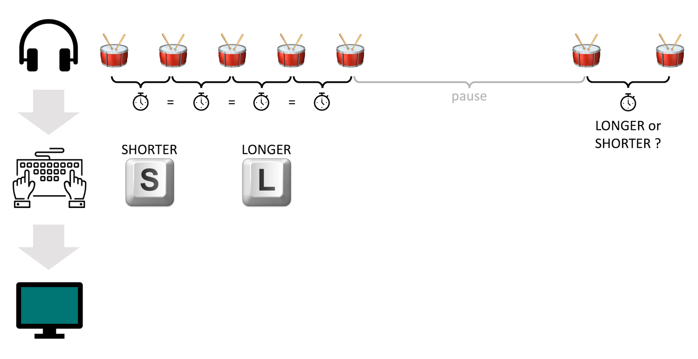

<!DOCTYPE html>
<html>
<head>
  <title> OPLMA </title>
  <script src="jatos.js"></script>
  <script src="OPLMA_PID.js"></script>
  <script src="jspsych-6.1.0/jspsych.js"></script>
  <script src="jspsych-6.1.0/plugins/jspsych-fullscreen.js"></script>
  <script src="jspsych-6.1.0/plugins/jspsych-survey-text.js"></script>
  <script src="jspsych-6.1.0/plugins/jspsych-audio-keyboard-response.js"></script>
  <script src="jspsych-6.1.0/plugins/jspsych-instructions.js"></script>
  <script src="jspsych-6.1.0/plugins/jspsych-audio-button-response.js"></script>
  <!-- <script src="jspsych-6.1.0/plugins/jspsych-html-keyboard-response-ITI.js"></script> -->
  <script src="jspsych-6.1.0/plugins/jspsych-html-keyboard-response.js"></script>
  <script src="jspsych-6.1.0/plugins/jspsych-image-keyboard-response.js"></script>
  <script src="jspsych-6.1.0/plugins/jspsych-html-button-response.js"></script>
  <link href="jspsych-6.1.0/css/jspsych.css" rel="stylesheet" type="text/css">
  </link>
</head>
<body></body>
<script>

var volaudio = new Audio("setVol_ex.wav");


function playVol(audio) {
  audio.play();
};

  jatos.onLoad(function() {

    var prolific_id = jatos.urlQueryParameters.prolific_id;
    var pt_index = jatos.batchSession.get(prolific_id);
    var curr_audio_files = oplma_PID[pt_index].audio_files;


    // +++++++++++++++++++++++++++++++++++++++++++++++++++++++++++++
    function init_experiment() {

      // VARIABLES ==================================================================
      // infovar @ AMJS_INFO_ALL.js
      // audio_files @ AMJS_audiofiles.js
      var timeVar = [];

      var prolific_id = jatos.urlQueryParameters.prolific_id;
      var pt_index = jatos.batchSession.get(prolific_id);

      // console.log(pt_index)

      var current_participant = oplma_PID[pt_index];
      var timeline_pt1 = current_participant.timevars_1;
      var curr_prac = current_participant.pracs;

      var participant_info = [];
      participant_info.pro_ID = prolific_id;
      participant_info.pt_index = pt_index;
      // console.log(participant_info)


      // var timeVar = [];
      //
      // var id_check = {
      //   type: 'html-button-response',
      //   choices: ['Continue', 'Abort'],
      //   stimulus: '<p>Detected Prolific ID is: '+prolific_id+'</p><p>If it is incorrect, please click &#39abort&#39 and contact us in Prolific.</p>',
      //   on_finish: function(data) {
      //     if (data.button_pressed == 1) {
      //       jatos.abortStudy();
      //       }
      //     },
      //   };
      //
      //   timeVar.push(id_check)
      //   timeVar.push({
      //       type: 'fullscreen',
      //       fullscreen_mode: true
      //     });
      //
      //     ///&#39
      //
      //
      //     var headphonequery = {
      //       type: 'survey-text',
      //       questions: [
      //         {prompt: "What is the brand and model of the headphones you are using for this experiment?", name: 'HeadphoneINFO'},
      //       ],
      //     };
      //     timeVar.push(headphonequery)
      //
      // // general instructions etc -------------------------------- << pages
      // var welcomePage = {
      //   type: 'html-button-response',
      //   stimulus: '<p style="font-size:30px;">WELCOME!</p><br>' +
      //     '<p>In this experiment, you will be asked to perform two kinds of tasks.</p>' +
      //     '<p>First, you will be asked to tap on the keyboard witout listening to any sound. This will be repeated later as well.</p>' +
      //     '<p>Then, you will participate in a task where you will hear sounds and press keys accordingly.</p>' +
      //     '<p>The whole session is expected to take approximately 80 minutes. Break options will be given three times throughout the experiment.<br><br><br></p>',
      //   choices: ['Continue']
      // }

      // // SMT trials --------------------------------------- << 30 taps
      // var tapSMTinstruc = {
      //   type: 'html-button-response',
      //   stimulus: '<pstyle="font-size:20px;">TAPPING</p><br>' +
      //     '<p>Your first task is to tap on the keyboard by pressing T on a regular beat. </p>' +
      //
      //     '<div style="display:table-cell; vertical-align:middle; text-align:center">'+
      //     ''+
      //     '</div>'+
      //
      //     '<p>You will tap first on a comfortable speed, then slowest and then on the fastest speed. </p>' +
      //     '<p>Please try to tap as evenly as possible, until you see a message on the screen. </p>' +
      //     '<p>Click &#39continue&#39 when you are ready. </p>',
      //   choices: ['Continue']
      // };
      // var tapSMTcomfy = {
      //   type: 'audio-keyboard-responseSSS', // plugin has been modified to record multiple keypresses
      //   stimulus: 'stimfiles/silence.wav',
      //   choices: 't',
      //   prompt: "<p>Please tap on the T key regularly, at a rate that is the most comfortable for you to maintain.</p>",
      //   response_ends_trial: true,
      //   //trial_duration: 10000,
      //   post_trial_gap: 500,
      // };
      // var tapSMTfast = {
      //   type: 'audio-keyboard-responseSSS', // plugin has been modified to record multiple keypresses
      //   stimulus: 'stimfiles/silence.wav',
      //   choices: 't',
      //   prompt: "<p>Please tap on the T key regularly, at the FASTEST rate that is comfortable for you to maintain.</p>",
      //   response_ends_trial: true,
      //   //trial_duration: 10000,
      //   post_trial_gap: 500,
      // };
      // var tapSMTslow = {
      //   type: 'audio-keyboard-responseSSS', // plugin has been modified to record multiple keypresses
      //   stimulus: 'stimfiles/silence.wav',
      //   choices: 't',
      //   prompt: "<p>Please tap on the T key regularly, at the SLOWEST rate that is comfortable for you to maintain.</p>",
      //   response_ends_trial: true,
      //   //trial_duration: 10000,
      //   post_trial_gap: 500,
      // };
      // var SMT_stop = {
      //   type: 'html-button-response',
      //   stimulus: '<p>You can stop tapping.</p>',
      //   choices: ['Continue']
      // }
      // var SMT_procedure = {
      //   timeline: [tapSMTinstruc, tapSMTcomfy, SMT_stop, tapSMTslow, SMT_stop, tapSMTfast, SMT_stop],
      //   repetitions: 1,
      //   randomize_order: false,
      // }
      //
      // var tapSMTrepeat = {
      //   type: 'html-button-response',
      //   stimulus: '<pstyle="font-size:20px;">TAPPING</p><br>' +
      //     '<p>Now, you will be asked to repeat the tapping task you completed before. </p>' +
      //     '<p>You will tap first on a comfortable speed, then slowest and then on the fastest speed. </p>' +
      //     '<p>Please try to tap as evenly as possible, until you see a message on the screen. </p>' +
      //     '<p>Click &#39continue&#39 when you are ready. </p>',
      //   choices: ['Continue']
      // };
      // var SMT_repeat = {
      //   timeline: [tapSMTrepeat, tapSMTcomfy, SMT_stop, tapSMTslow, SMT_stop, tapSMTfast, SMT_stop],
      //   repetitions: 1,
      //   randomize_order: false,
      // }

      // instructions etc ---------------------------------------

      var instrucPages = {
        type: 'instructions', // modified >> pauses volauio, ...
        pages: [
          // ___________________ volume check >> via noise ___________________
          '<p>Now, please turn down your volume and then click the button below.<br></p>' +
          '<button onclick="playVol(volaudio)"> play sound </button>' +
          '<p>Please set the sound volume of your computer such that you hear this sound comfortably.</p>' +
          '<p style="color:#FF0000";>Please keep in mind that you should not change the sound volume throughout the experiment !</p>' +
          '<p>You can listen to the sound as many times as you want until you set the volume. </p>' +
          '<p>Once it is set, click &#39next&#39.<br><br></p>',

          // ___________________ instructions ___________________
          '<p>In the following section, you will hear sounds and respond on the keybord accordingly.</p>' +
          '<p>In each trial, you will first hear a sound consisting of 5 hits, and then a sound of 2 hits.</p>' +
          '<p>Your task is to decide if the time passed between the two hits was longer or shorter than the ones in the previous rhythm.</p>' +
          '<p><br>If the interval between this latter sounds is LONGER than the interval between the 5-hit rhythm you heard right before, please press L key.</p>' +
          '<p>If the interval between this latter sounds is SHORTER than the interval between the 5-hit rhythm you heard right before, please press S key.</p>' +
          '<p><br>Here is a graphical representation of the task:</p>' +

          '<div style="width: 100%; height: 100%; display: flex; justify-content: center; padding: 10px 10px 50px 10px;">' +
          '</img>' +
          '</div>' +

          '<div><p>Please read the instructions carefully, then click &#39next&#39 to practice the task. </strong><br></p></div>',
        ],
        show_clickable_nav: true
      };

      // Practice TRIALS --------------------------------------------------
      var feedback_text = [];
      var nogoodgottago = 0;
      var practice_procedure = {
        timeline: [{
            type: 'audio-keyboard-response',
            stimulus: jsPsych.timelineVariable('stimulus'),
            choices: ['s', 'l'],
            prompt: "<p> + </p>",
            post_trial_gap: 500,
            response_ends_trial: true,
            trial_ends_after_audio: false,
            on_finish: function(data) {

              var curr_stim_dir = [];
              if (data.stimulus.includes('-')){
                curr_stim_dir = -1;
              } else {
                curr_stim_dir = 1;
              };

              console.log(data.stimulus);
              console.log(curr_stim_dir);

              if (data.key_press === 76 && curr_stim_dir < 0) {
                // 'L' key & neg deviation = incorrect resp
                feedback_text.push('The latter interval was shorter than the previous intervals. <br>Your response was incorrect. <br><br>');
                nogoodgottago++;
              };
              if (data.key_press === 76 && curr_stim_dir > 0) {
                // 'L' key & pos deviation = incorrect resp
                feedback_text.push('<br>Your response was correct. <br><br>');
              };
              if (data.key_press === 83 && curr_stim_dir > 0) {
                // 'S' key & pos deviation = incorrect resp
                feedback_text.push('The latter interval was longer than the previous intervals. <br>Your response was incorrect. <br><br>');
                nogoodgottago++;
              };
              if (data.key_press === 83 && curr_stim_dir < 0) {
                // 'S' key & neg deviation = incorrect resp
                feedback_text.push('<br>Your response was correct. <br><br>');
              };

            } // on_finish: function
          }, // trial timeline part 1

          // { // intertrial intv
          //   type: 'html-keyboard-response-ITI',
          //   stimulus: '+',
          //   trial_duration: 500,
          //   choices: jsPsych.NO_KEYS
          // },
          //
          { // intertrial intv
            type: 'html-button-response',
            on_start: function(trial) {
              trial.stimulus = feedback_text;
              feedback_text = [];
            },
            stimulus: '+',
            choices: ['OK']
          } // trial timeline part 2

        ], //.. timeline end

        timeline_variables: curr_prac,
        randomize_order: false,
        // on_finish: function() {
        //   if (nogoodgottago > 2) {
        //     alert('Faulty participation detected. Expertiment will now terminate.')
        //     jatos.abortStudy();
        //   }
        // }
      } // practice_procedure end


      // Test TRIALS ---------------------------------------------------------------
      var trialstart = {
        type: 'html-button-response',
        post_trial_gap: 500,
        stimulus: '<p style="font-size:30px;">EXPERIMENT</p>' +
          '<p>You have completed the practice section.</p>' +
          '<p>In the following section, the pacing will be automated, and no feedback will be given. </p>' +
          '<p>Therefore, it is important that you keep concentrated to the task between the breaks.</p>' +
          '<p>Please click the button below to proceed to the experimental section</p>',
        choices: ['Start section'],
      };


      // // Other trials ---------------------------------------------------------------
      var sectDone = {
        type: 'html-button-response',
        stimulus: '<p>You have completed this section. Click &#39continue&#39 to proceed. </p>',
        choices: ['Continue']
      };
      // var break_trial = {
      //   type: 'html-button-response',
      //   stimulus: '<p style="font-size:30px;">Break!</p>' +
      //     '<p><br>Click &#39continue&#39 to proceed.</p>',
      //   choices: ['Continue']
      // }
      // var thxbye = {
      //   type: 'html-button-response',
      //   stimulus: '<p style="font-size:30px;">Thank you!</p>' +
      //     '<p>You have completed the experiment.</p>' +
      //     '<p>Click &#39continue&#39 to close the experiment and proceed to Prolific.</p>',
      //   choices: ['Continue']
      // };
      //
      //

      // PROCEDURE =============================================================

      // timeVar.push(welcomePage);
      timeVar.push(instrucPages);

      timeVar.push(sectDone);
      timeVar.push(practice_procedure);

      // timeVar.push(test_trials_1);
      // timeVar.push(break_trial);
      // timeVar.push(test_trials_2);
      // timeVar.push(break_trial);
      // timeVar.push(test_trials_3);
      // timeVar.push(sectDone);
      //
      // timeVar.push(SMT_repeat);
      // timeVar.push(thxbye);

      // console.log(timeVar);

      // EXPERIMENT INIT =======================================================
      jsPsych.init({
        timeline: timeVar,
        default_iti: 550,
        use_webaudio: false,
        preload_audio: curr_audio_files,
        on_close: function() {
          var resultCSV = jsPsych.data.get().csv();
          var closed_data = jatos.uploadResultFile(resultCSV, 'op_closed.csv');
        },
          on_finish: function() {
            var interaction_data = jsPsych.data.getInteractionData();
            jatos.uploadResultFile(interaction_data, 'interac.csv');
            var resultCSV = jsPsych.data.get().csv();
            var full_data = jatos.uploadResultFile(resultCSV, 'opdata.csv');

            jatos.endStudyAjax().then(() => {
            // Change this URL to the one you see in Prolific
            window.location.href = 'https://app.prolific.co/submissions/complete?cc=7A0BF2E1'
            });
        },
      })
    } // end of init_experiment function
    // (set up variables + initiate experiment)
    // +++++++++++++++++++++++++++++++++++++++++++++++++++++++++++++

    // JATOS STUFF (get participant code and run init_experiment accordingly)
    // ! init_experiment is defined above but runs after these lines !!!!

    // Extract url var (here prolific_id)
    var prolific_id = jatos.urlQueryParameters.prolific_id
    if (prolific_id) {

      // IF existing ID
      if (jatos.batchSession.find('/' + prolific_id)) {
        init_experiment();

        // IF new ID
      } else {

        // count existing participants
        var batchSession = jatos.batchSession.getAll();
        var pt_index = Object.keys(batchSession).length;

        // add new ID to session data
        var promise = jatos.batchSession.add('/' + prolific_id, pt_index);
        // if added, start experiment
        promise.done(() => {
          init_experiment();
        });
      }
    } else {
      alert('No prolific ID found! please contact us!')
      jatos.abortStudy();
    }

  });
</script>

</html>
